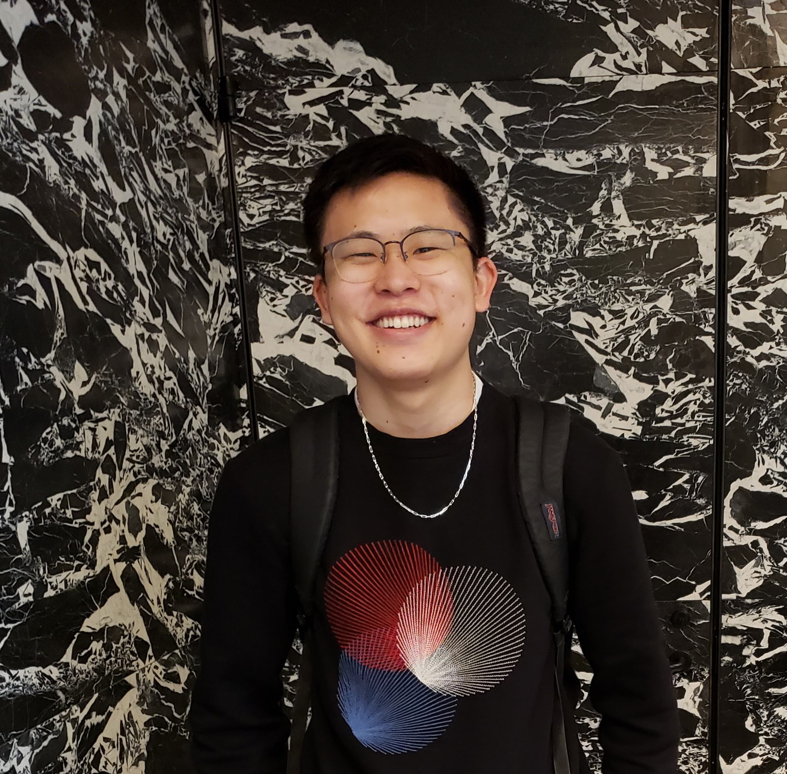

A community of students, researchers, and advocates united by a vision for a more sustainable food future.
Our Story
The Alternative Protein Project at JHU is a student-run organization affiliated with the Good Food Institute's campus network. Founded by a passionate group of Hopkins students, we've grown into a vibrant community of researchers, advocates, and food enthusiasts from across the university.
Our work spans education, advocacy, and community-building — hosting events, forging partnerships, and connecting our members with opportunities in the rapidly expanding alternative protein sector.
"We believe that students at research universities like JHU are uniquely positioned to accelerate the alternative protein revolution — through science, through ideas, and through community."— The Alternative Protein Project at JHU
Our Values
Our work is grounded in a commitment to science, sustainability, equity, and cross-disciplinary collaboration. We believe that changing our food system requires bold ideas and open minds.
We believe shifting our food system toward alternative proteins is essential for addressing climate change and protecting biodiversity.
We champion evidence-based approaches, connecting students with the latest research in food science, biotech, and nutrition.
We welcome students from all disciplines — biology to business to public health — to contribute their unique perspectives.
We seek to inform, engage, and inspire the Hopkins community around the potential of alternative proteins.
Our Network
We are a proud member of the Good Food Institute's Alternative Protein Project campus network — a global community of student organizations working to transform the food system.
Connected to the Good Food Institute's international network of university chapters, giving our members access to resources, mentors, and industry connections worldwide.
Rooted in one of the world's top research universities, we bridge academic science and real-world food system change at JHU and beyond.
Every initiative, event, and partnership is driven by Hopkins students who care deeply about the future of food and our planet.
Our Team
Our student leaders bring together expertise across biology, engineering, public health, and business to drive our mission forward.

We welcome students from all backgrounds and disciplines who share our passion for alternative proteins and sustainable food.